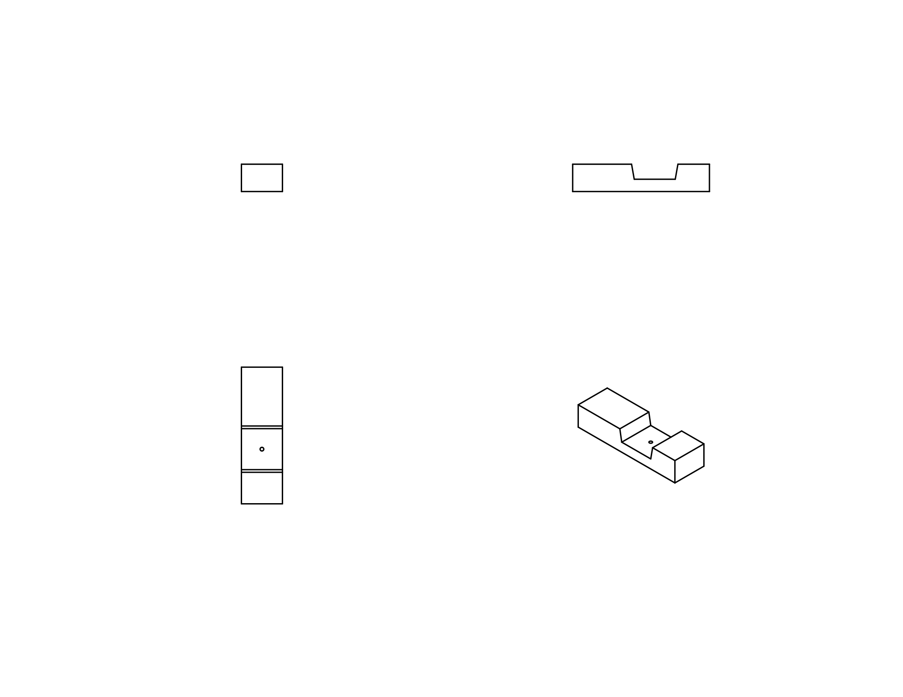
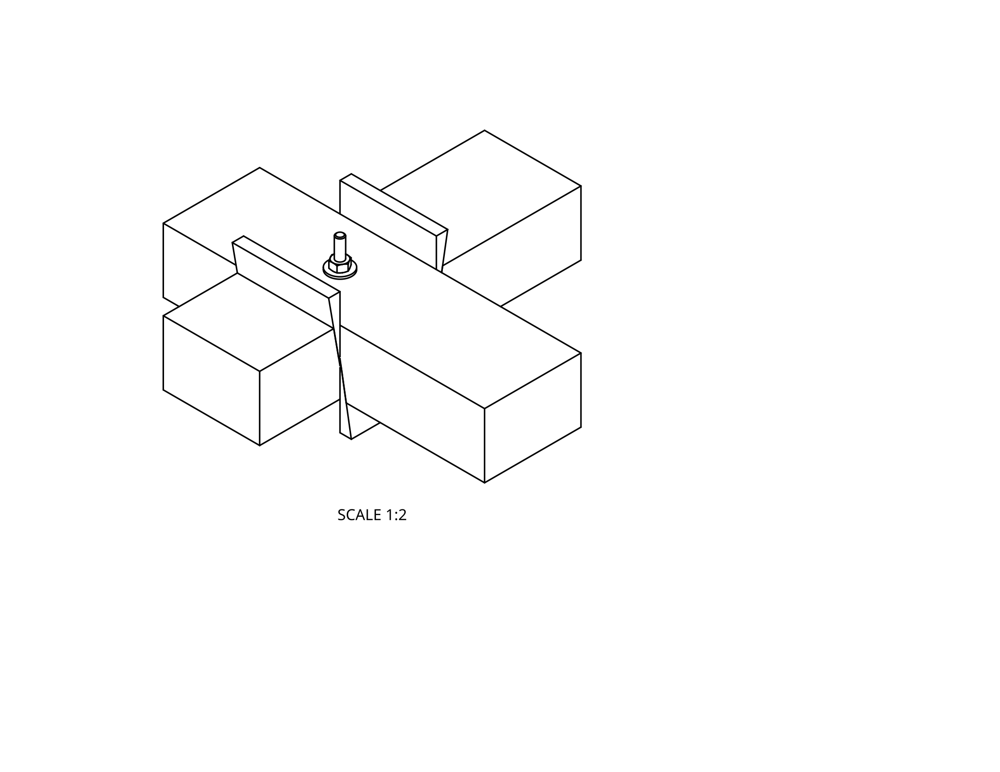
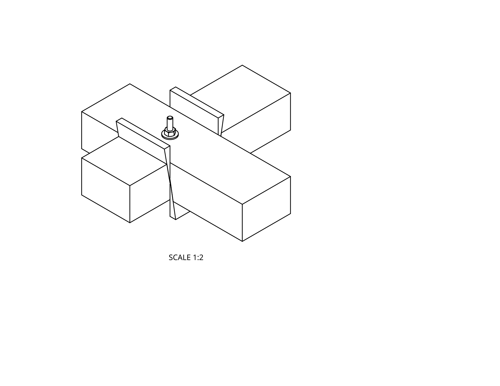
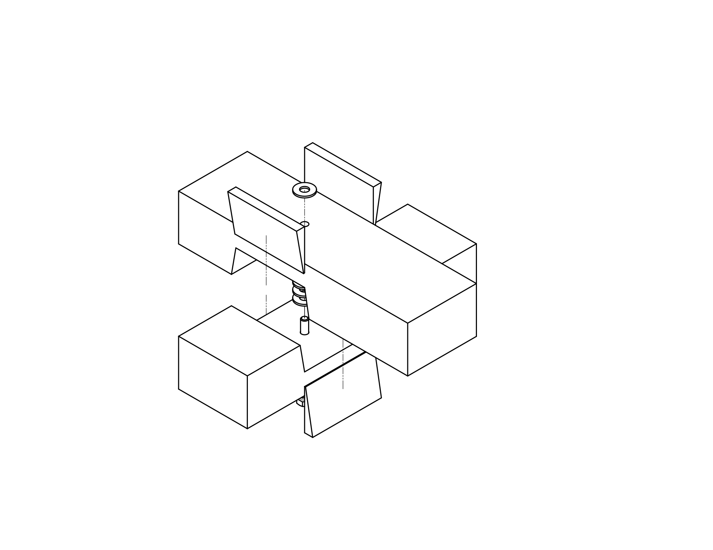

The trapezoidal lap joint is intended to be both temporary and rigid. Constructions which use the joint can be assembled and disassembled over and over again without loosing rigidity.

I want to do hand tool woodworking but don't have much space. I want a workbench that can be disassembled when not in use.
Sawing, planeing and chiseling apply a lot of horizontal force to the work piece and the workbench it is clamped to. That bench must be rigid to not rack and wobble under those forces.
A common approach to building a portable workbench is to join legs to the horizontal stretchers that run between them using tusked mortise and tenon joints. The Moravian workbench is an example of this.
A tusked mortize and tenon joint would require the legs to be very thick, and therefore heavy. The leg has a mortise that the tennon on the end of the stretcher must fit through. Through that tenon is another mortise to accomodate the wedge shaped key that holds the joint together. The total thickness of the leg is determined by the thickness of four mortise walls and key. I'm concerned that to be strong this might also be bulky.
What are my alternatives to the tusked mortise and tenon?
A cross lap joint is strong but is not temporary. Each time the joint is fitted together and taken apart the wood wears and the joint gets looser. What if the cross lap joint could be modified so that the joint got tighter as the two pieces being joinied were brought together? This would happen if the walls of the notched cutouts were sloped and the mating surfaces had a matching slope. I call this a trapezoidal lap joint because the notch in each half of the joint is an isoscles trapezoid rather than a rectangle.
Though the concept of the trapezoidal lap joint is obvious, it is not clear how to make one that works. For there to be no play in the assembled joint, four angled faces must all come into contact with their mating faces at the same time.
Each half of the joint is a rectangular beam with an isoscles trapeoidal cut-out. At the center of the face defined by the shorter base of the trapezoid (and the floor of the joint half) is a hole. A bolt goes through those holes in the two halves of the joint. That bolt and a mating wing nut are used to draw the two halves of the joint tightly together.
Wedges, cut at the same angle as the legs of the trapezoid, are glued to the sides of the beams to make a completed joint. In the photo below, one wedge and the face it mates with are marked with circles.
 

How do we position the wedges so that all of the angled faces meet at once? We fix the relative positions of the two halves of the joint first and then glue in the wedges. The joint is assembled wit a stack of several (I used 3) fender washers in the middle to hold the two beams apart from each other. The nut and bolt are tightened while making sure that the two beams form a right angle. Then, for each wedge, glue is applied to the face that will meet the side of the beam and the wedge is inserted. All four wedges are inserted with equal force.
The purpose of the stack of fender washers in the middle of the joint is to provide separation between the joint floors. Onece the glue is dry, these washers are removed and no longer needed. No matter how much the wood wears, expands or contracts, this spacing will ensure that the joint never bottoms out and the onlt contact is on the angled surfaces.
I've not provided measurements. I made the prototype out of a 2×4. That informs the length of the shorter base of each trapezoid. I don't remember what angle I used for the leg cuts, but I expect it would depend on the thread picth of the bolt.
When the joint is assembled and the wing nut hand tightened, it is very solid, very rigid.
I've not yet built the workbench.
Here is my model of the joint in OnShape: https://cad.onshape.com/documents/f48e803da02ee71496c21d22/w/a8f24e76c9466e030d59ab2f/e/1ef112d2283bf1bc949f9c3d
The drawings above were exported from there.